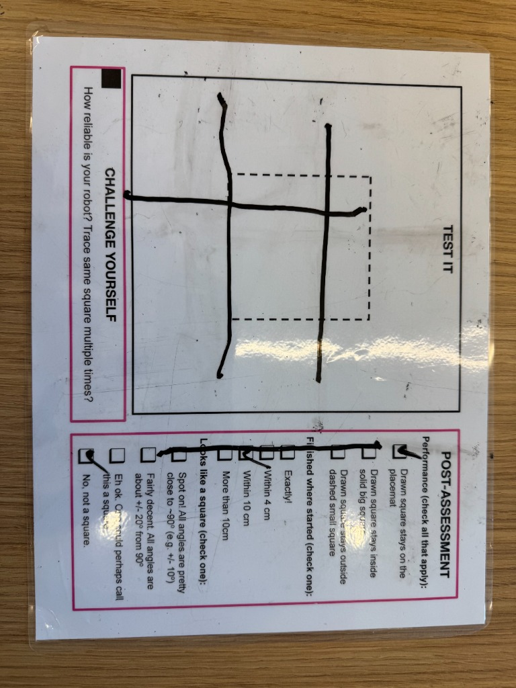

Project Portfolio
Project 7: Draw a Square

This project challenged me to draw a square smaller than 6 inches by 6 inches (15.25 cm by 15.25 cm), and no larger than 2.75 inches by 2.75 inches (7 cm by 7 cm). As you can see in the photo, my drawing was not quite a square.
I took an ambitious approach at first, which left me with little time to come up with something that worked (I use that term lightly). It was a great learning experience, and I told myself I would come back to it. Watch out for Project 8: Astronaut Tools.
One change I would make to my approach is to use a square platform to draw on. I think my idea might have worked if the robot had not been constrained by the rectangular drawing platform.
To see how my robot drew a terrible square, see the video below.